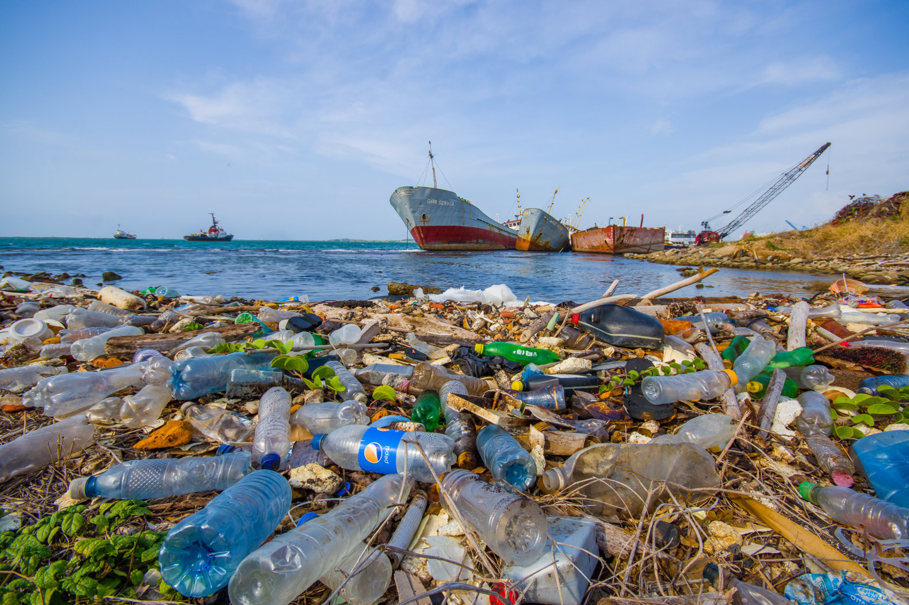

Marine Plastic Pollution
What is plastic pollution?
As the world’s population continues to grow, so does the amount of garbage that people produce. On-the-go lifestyles require easily disposable products, such as soda cans or bottles of water, but the accumulation of these products has led to increasing amounts of plastic pollution around the world. As plastic is composed of major toxic pollutants, it has the potential to cause great harm to the environment. Did you know that over the last decade we have produced more plastic than during the whole of the last century? Or that our oceans now contain billions of pounds of plastic?

Why is plastic harmful?
Plastic never goes away
Plastic is a material made to last forever, yet 33 percent of all plastic - water bottles, bags and straws - are used just once and thrown away. Plastic cannot biodegrade; it breaks down into smaller and smaller pieces.
Plastic affects human health.
Toxic chemicals leach out of plastic and are found in the blood and tissue of nearly all of us. Exposure to them is linked to cancers, birth defects, impaired immunity, endocrine disruption and other ailments.
Plastic threatens wildlife.
Wildlife become entangled in plastic, they eat it or mistake it for food and feed it to their young, and it is found littered in even extremely remote areas of the Earth. In our oceans alone, plastic debris outweighs zooplankton by a ratio of 36-to-1.
Plastic piles up in the environment.
Americans discard more than 30 million tons of plastic a year. Only 8 percent gets recycled. The rest ends up in landfills, is burned or becomes litter.
Plastic poisons our food chain.
Even plankton, the tiniest creatures in our oceans, are eating microplastics and absorbing their hazardous chemicals. The tiny, broken down pieces of plastic are displacing the algae needed to sustain larger sea life who feed on them.